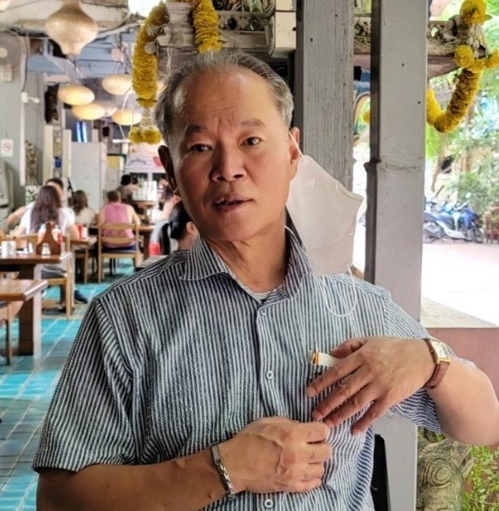

Welcome
Hello, I’m Sang Min Shim(Adrian).
I’m an independent professional with a background in capital markets and corporate transactions. These days I also spend time on open, non-commercial environmental technology research. This site is a quiet place to share who I am and what I’m thinking about.
About Me
[Placeholder: a few sentences about yourself — where you are based, how you came to your work, and what matters to you.]
Interests
[Placeholder: personal interests and pursuits outside of work.]
Philosophy
[Placeholder: a short statement of the principles you try to work and live by.]
Professional Background
My professional experience is in the following areas of capital markets and corporate transactions:
- Capital Markets
- Mergers & Acquisitions (M&A)
- Initial Public Offerings (IPOs)
- Tender Offers
[Placeholder: add a short description of your role and experience in each area, only as you are comfortable sharing it.]
Current Interests
I am interested in independent research and environmental technology, and I take part in open, non-commercial work through AZAD Research Group (AZADrg).
[Placeholder: describe in your own words what draws you to this work.]
This is my personal website. Views and notes here are my own and do not represent AZADrg. Official technical publications are released separately by AZADrg. [Add a link to the AZADrg site here.]
Thoughts & Notes
A space for personal essays and reflections. Nothing has been posted yet.
[Placeholder: add entries here as you write them, e.g. a title, a date, and a short summary linking to the full note.]
Contact
The best way to reach me is through LinkedIn.
Optional email: [your-email@example.com]